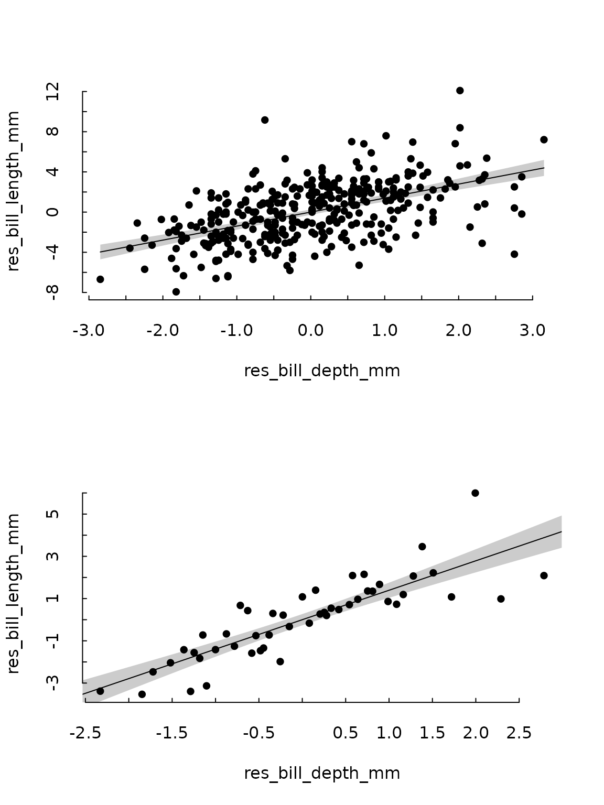

Getting started
Let’s make a simple linear model first.
library(partialling.out)
library(tinytable)
library(tinyplot)
library(palmerpenguins)
library(fwlplot)
model <- lm(bill_length_mm ~ bill_depth_mm + species, data = penguins)
summary(model)
#>
#> Call:
#> lm(formula = bill_length_mm ~ bill_depth_mm + species, data = penguins)
#>
#> Residuals:
#> Min 1Q Median 3Q Max
#> -8.0300 -1.5828 0.0733 1.6925 10.0313
#>
#> Coefficients:
#> Estimate Std. Error t value Pr(>|t|)
#> (Intercept) 13.2164 2.2475 5.88 9.83e-09 ***
#> bill_depth_mm 1.3940 0.1220 11.43 < 2e-16 ***
#> speciesChinstrap 9.9390 0.3678 27.02 < 2e-16 ***
#> speciesGentoo 13.4033 0.5118 26.19 < 2e-16 ***
#> ---
#> Signif. codes: 0 '***' 0.001 '**' 0.01 '*' 0.05 '.' 0.1 ' ' 1
#>
#> Residual standard error: 2.518 on 338 degrees of freedom
#> (2 observations deleted due to missingness)
#> Multiple R-squared: 0.7892, Adjusted R-squared: 0.7874
#> F-statistic: 421.9 on 3 and 338 DF, p-value: < 2.2e-16Using the partialling_out function, you can get the
residualised variable of interest (bill_length_mm) and of
the first explanatory variable (bill_depth_mm), i.e. it
would return the residuals of the following two regressions.
modely <- lm(bill_length_mm ~ species, data = penguins)
modelx <- lm(bill_depth_mm ~ species, data = penguins)
res <- partialling_out(model, data = penguins)
tt(head(res)) |>
format_tt(digits = 2) |>
style_tt(align = "c")| res_bill_length_mm | res_bill_depth_mm |
|---|---|
| 0.31 | 0.35 |
| 0.71 | -0.95 |
| 1.51 | -0.35 |
| -2.09 | 0.95 |
| 0.51 | 2.25 |
| 0.11 | -0.55 |
Accordingly, the coefficient of res_bill_depth_mm in the
model lm(res_bill_length_mm ~ res_bill_depth_mm) will be
the same of the coefficient of bill_depth_mm in the
original model.
resmodel <- lm(res_bill_length_mm ~ res_bill_depth_mm, data = res)
print(c(model$coefficients[2], resmodel$coefficients[2]))
#> bill_depth_mm res_bill_depth_mm
#> 1.394011 1.394011If both is set to FALSE, the function will
return the actual Y values and the residualised X values.
tt(head(partialling_out(model, penguins, both = FALSE))) |>
format_tt(digits = 2) |>
style_tt(align = "c")| bill_length_mm | res_bill_depth_mm |
|---|---|
| 39 | 0.35 |
| 40 | -0.95 |
| 40 | -0.35 |
| 37 | 0.95 |
| 39 | 2.25 |
| 39 | -0.55 |
Weighted models
If weights are specified in partialling_out
they will be used to weight the underlying partial models. The weights
will also be returned as a column in the result data.frame. If the
original model is weighted but the partial models aren’t, the function
will throw a warning (also if the original model is not weighted but
partial models are).
model <- lm(
bill_length_mm ~ bill_depth_mm + species,
data = penguins,
weights = penguins$body_mass_g
)
res <- partialling_out(model, data = penguins, weights = penguins$body_mass_g)
tt(head(res)) |>
format_tt(digits = 2) |>
style_tt(align = "c")| res_bill_length_mm | res_bill_depth_mm | weights |
|---|---|---|
| 0.129 | 0.27 | 3750 |
| 0.529 | -1.03 | 3800 |
| 1.329 | -0.43 | 3250 |
| -2.271 | 0.87 | 3450 |
| 0.329 | 2.17 | 3650 |
| -0.071 | -0.63 | 3625 |
Note that, for the FWL theorem to hold, if the partial models are weighted, the linear model between the two residualised variables must be weighted as well.
unweighted_model <- lm(res_bill_length_mm ~ res_bill_depth_mm, data = res)
weighted_model <- lm(
res_bill_length_mm ~ res_bill_depth_mm,
weights = res$weights,
data = res
)
data.frame(
"original model" = model$coefficients[2],
"unweighted model" = unweighted_model$coefficients[2],
"weighted_model" = weighted_model$coefficients[2]
) |>
tt() |>
format_tt(digits = 4) |>
style_tt(align = "c")| original.model | unweighted.model | weighted_model |
|---|---|---|
| 1.442 | 1.394 | 1.442 |
Fixed effects models
As stated, the model will also work with feols or
felm models
library(fixest)
model_fixest <- feols(bill_length_mm ~ bill_depth_mm | species, data = penguins)
res_fixest <- partialling_out(model_fixest, data = penguins)
tt(head(res_fixest)) |>
format_tt(digits = 2) |>
style_tt(align = "c")| res_bill_length_mm | res_bill_depth_mm |
|---|---|
| 0.31 | 0.35 |
| 0.71 | -0.95 |
| 1.51 | -0.35 |
| -2.09 | 0.95 |
| 0.51 | 2.25 |
| 0.11 | -0.55 |
library(lfe)
model_lfe <- felm(bill_length_mm ~ bill_depth_mm | species, data = penguins)
res_lfe <- partialling_out(model_lfe, data = penguins)
tt(head(res_lfe)) |>
format_tt(digits = 2) |>
style_tt(align = "c")| res_bill_length_mm | res_bill_depth_mm |
|---|---|
| 0.31 | 0.35 |
| 0.71 | -0.95 |
| 1.51 | -0.35 |
| -2.09 | 0.95 |
| 0.51 | 2.25 |
| 0.11 | -0.55 |
Interaction terms and varying slopes
So far, interaction terms with :, *, or
^ (in feols) as well as varying slopes in
feols with [ or [[ are supported
only for variables other than the main explanatory variable, i.e.
feols(bill_depth_mm ~ bill_length_mm | species^sex, data = penguins) |>
partialling_out(data = penguins)is supported, but
feols(bill_depth_mm ~ i(bill_length_mm, species) | sex, data = penguins) |>
partialling_out(data = penguins)will yield an error. Therefore, if your main explanatory variable is an interaction, it should be built outside the model if you intend to partial it out afterwards.
AsIs and polynomial terms
So far, AsIs expressions, and polynomial terms in the formula are not yet supported, so these two expressions will yield an error.
partialling_out(lm(bill_depth_mm ~ I(bill_length_mm^2) + species,
data = penguins))
partialling_out(lm(bill_depth_mm ~ poly(bill_length_mm, 2) + species,
data = penguins[!is.na(penguins$bill_length_mm), ]))Plotting the results
The library includes the function
plot_partial_residuals() to plot a scatterplot of the
residualised variables with a tendence line (which can be disabled if
the parametre add_lm is set to FALSE) using tinyplot
as backend. If the parametre quantile is set to
TRUE it will divide the main explanatory variable in the
specified number of quantiles (by default, 50) and plot the mean values
for X and Y for each quantile.
tinytheme("tufte")
par(mfrow = c(2, 1))
plot_partial_residuals(res_fixest)
plot_partial_residuals(res_fixest, quantile = TRUE)
Plotting all residuals is equivalent to the following approach in
fwlplot
fwlplot(bill_length_mm ~ bill_depth_mm | species, data = penguins)
Adding other parameters to the model
Any parameters that could be passed to lm(),
feols(), or felm(), can be passed to
partialling_out().
model_fixest <- feols(
bill_length_mm ~ bill_depth_mm | species + island,
data = penguins,
cluster = ~species
)
tt(head(partialling_out(model_fixest, data = penguins, cluster = ~species))) |>
format_tt(digits = 2) |>
style_tt(align = "c")| res_bill_length_mm | res_bill_depth_mm |
|---|---|
| 0.149 | 0.27 |
| 0.549 | -1.03 |
| 1.349 | -0.43 |
| -2.251 | 0.87 |
| 0.349 | 2.17 |
| -0.051 | -0.63 |
Acknowledgements
To the authors of the fwlplot package, Kyle Butts and Grant McDermott, which has provided inspiration and ideas for this project. To my colleague Andreu Arenas-Jal for his insight and guiding.